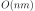
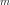
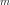
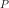
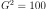
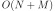
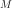
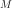

1A - Enoncé 26 octobre 2022#
Correction de l’examen du 26 octobre 2022.
Exercice 1 : calcul de distances#
On souhaite calculer pour chaque rue de France le médecin le plus proche (environ 100.000 médecins généralistes). On suppose qu’on dispose des coordonnées des rues  et de celle des médecins
et de celle des médecins  .
.
Q1 : tirer deux matrices aléatoires pour X et Y, de tailles différentes#
[2]:
import numpy
def tirage_alea(n_rues, n_med):
return numpy.random.rand(n_rues, 2), numpy.random.rand(n_med, 2)
X, Y = tirage_alea(10, 5)
X, Y
[2]:
(array([[0.07629544, 0.9432004 ],
[0.52035232, 0.47051663],
[0.89432851, 0.07652123],
[0.01653439, 0.99436816],
[0.1499065 , 0.10758634],
[0.29317605, 0.76729661],
[0.97237465, 0.25573414],
[0.60399214, 0.72086801],
[0.76951744, 0.75725811],
[0.6663647 , 0.92848284]]),
array([[0.07308657, 0.11122628],
[0.92539686, 0.48536534],
[0.43820312, 0.26151317],
[0.74683167, 0.40646889],
[0.92033983, 0.88312987]]))
Q2 : calculer tous les distances entre X et Y#
On ne peut pas utiliser la fonction cdist (pairwise distances) mais rien n’empêche de l’essayer.
[3]:
from scipy.spatial.distance import cdist
cdist(X, Y)
[3]:
array([[0.83198031, 0.96466894, 0.77179962, 0.85889438, 0.8461793 ],
[0.57370393, 0.40531662, 0.22456834, 0.23536145, 0.57466486],
[0.82197491, 0.41002286, 0.49221173, 0.36141496, 0.80702793],
[0.88495069, 1.04168846, 0.84550633, 0.93752849, 0.91062519],
[0.07690611, 0.86261363, 0.32681556, 0.66757055, 1.0931767 ],
[0.69200264, 0.69223434, 0.52616512, 0.57965512, 0.63777092],
[0.91082466, 0.23438729, 0.53420279, 0.27127587, 0.62954985],
[0.80840816, 0.39845012, 0.48835731, 0.34532585, 0.3555345 ],
[0.94993319, 0.31340719, 0.59626523, 0.351522 , 0.19644616],
[1.00989466, 0.51327456, 0.70491577, 0.52817942, 0.25799275]])
[4]:
def pairwise_distance(X, Y):
res = numpy.empty((X.shape[0], Y.shape[0]))
for i in range(X.shape[0]):
for j in range(Y.shape[0]):
d = (X[i, :] - Y[j, :]) ** 2
res[i, j] = d.sum() ** 0.5
return res
pairwise_distance(X, Y)
[4]:
array([[0.83198031, 0.96466894, 0.77179962, 0.85889438, 0.8461793 ],
[0.57370393, 0.40531662, 0.22456834, 0.23536145, 0.57466486],
[0.82197491, 0.41002286, 0.49221173, 0.36141496, 0.80702793],
[0.88495069, 1.04168846, 0.84550633, 0.93752849, 0.91062519],
[0.07690611, 0.86261363, 0.32681556, 0.66757055, 1.0931767 ],
[0.69200264, 0.69223434, 0.52616512, 0.57965512, 0.63777092],
[0.91082466, 0.23438729, 0.53420279, 0.27127587, 0.62954985],
[0.80840816, 0.39845012, 0.48835731, 0.34532585, 0.3555345 ],
[0.94993319, 0.31340719, 0.59626523, 0.351522 , 0.19644616],
[1.00989466, 0.51327456, 0.70491577, 0.52817942, 0.25799275]])
Q3 : écrire un test unitaire qui vérifie le résultat lorsque X est la matrice identité 2x2#
[5]:
from numpy.testing import assert_allclose
def test_distance():
x = numpy.identity(2)
r = pairwise_distance(x, x)
assert_allclose(r, numpy.array([[0, 2**0.5], [2**0.5, 0]]))
# on peut écrire également
assert r.tolist() == [[0, 2**0.5], [2**0.5, 0]]
test_distance()
Q4 : quel est le coût de l’algorithme en fonction des dimensions de X et Y ?#
Le coût est  où  est le nombre de lignes de et  le nombre de lignes de .
est le nombre de lignes de et  le nombre de lignes de .
Q5 : Ecrire une fonction qui retourne l’indice du médecin le plus proche pour chaque rue#
[6]:
def plus_proche_medecin(X, Y):
dist = pairwise_distance(X, Y)
return numpy.argmin(dist, axis=1)
plus_proche_medecin(X[:5], Y[:2])
[6]:
array([0, 0, 0, 0, 1], dtype=int64)
Q6 : on crée une grille 10x10 pour quadriller l’espace. Ecrire une fonction qui calcule les coordonnées de la grille pour un point donné.#
[7]:
def grille(p, p_min, p_max, n):
c = numpy.floor((p - p_min) / (p_max - p_min) * n) / n
return c
def test_grille():
r = grille(
numpy.array([[0.41, 0.71], [0.39, 0.99]]),
numpy.array([0, 0]),
numpy.array([1, 1]),
10,
)
assert r.tolist() == [[0.4, 0.7], [0.3, 0.9]]
test_grille()
Q7 : écrire une fonction qui créé un dictionaire { case_grille : indices }.#
[8]:
def map_grille_indices(x, n=10):
xi = grille(x, x.min(axis=0), x.max(axis=0), n)
res = {}
for i in range(xi.shape[0]):
key = tuple(xi[i, :])
if key in res:
res[key].append(i)
else:
res[key] = [i]
return res
def test_map():
x = numpy.arange(8).reshape((-1, 2))
d = map_grille_indices(x, 1)
assert d == {(0.0, 0.0): [0, 1, 2], (1.0, 1.0): [3]}
d = map_grille_indices(x, 2)
assert d == {(0.0, 0.0): [0, 1], (0.5, 0.5): [2], (1.0, 1.0): [3]}
d = map_grille_indices(x - 5, 2)
assert d == {(0.0, 0.0): [0, 1], (0.5, 0.5): [2], (1.0, 1.0): [3]}
test_map()
Q8 : modifier la fonction pairwise_distance pour ne calculer que les distances des points dans la même case#
[9]:
def pairwise_distance_grille(X, Y, n=10):
gx = map_grille_indices(X, n)
gy = map_grille_indices(Y, n)
res = numpy.empty((X.shape[0], Y.shape[0]))
res[:, :] = 1e6
for key, indices in gx.items():
if key not in gy:
continue
for i in indices:
for j in gy[key]:
d = (X[i, :] - Y[j, :]) ** 2
res[i, j] = d.sum() ** 0.5
return res
def test_distance_grille():
x = numpy.random.rand(4, 2)
y = numpy.random.rand(2, 2)
r1 = pairwise_distance(x, y)
r2 = pairwise_distance_grille(x, y, n=2)
assert r1.shape == r2.shape
ind = r2.ravel() != 1e6
assert r1.ravel()[ind].tolist() == r2.ravel()[ind].tolist()
test_distance_grille()
Q9 : Mesurer le temps pour deux matrices 1000x2, 100x2 ?#
[10]:
X, Y = tirage_alea(1000, 100)
%timeit pairwise_distance(X, Y)
415 ms ± 23.9 ms per loop (mean ± std. dev. of 7 runs, 1 loop each)
[11]:
%timeit pairwise_distance_grille(X, Y)
6.41 ms ± 470 µs per loop (mean ± std. dev. of 7 runs, 100 loops each)
On peut également l’écrire comme ceci :
[12]:
import timeit
timeit.repeat("pairwise_distance(X, Y)", globals=globals(), repeat=5, number=2)
[12]:
[0.8018622000236064,
0.8201483000302687,
0.8459657999919727,
0.8035789999994449,
0.8155568999936804]
[13]:
timeit.repeat("pairwise_distance_grille(X, Y)", globals=globals(), repeat=5, number=2)
[13]:
[0.026652099972125143,
0.01595849997829646,
0.01231670001288876,
0.012164799962192774,
0.011980499955825508]
La seconde fonction est plus rapide car on ne calcule que les distances dans paires de points dans une même case. Si on suppose que chaque case contient le même nombre de points, , il y a  cases, le calcul est quasiment fois plus rapide. Il n’est pas tout-à-fait 100 fois plus rapide car il faut parcourir calculer la case de chaque point et les indexer. Mais cette opération est en  où  est le nombre de rues et  le nombre de
médecins.
est le nombre de rues et  le nombre de
médecins.
Ce raisonnement fonctionne si chaque case contient approximativement le même nombre de points ce qui le cas ici car les points ont été tirés selon une loi uniforme. Mais imaginons qu’il y ait des points aberrants et que le minimum et maximum des coordonnées calculés pour construire la grille soient très grands ; dans ce cas, les points seront tous situés dans la même case à part les points extrêmes. L’optimisation proposée ici ne fonctionnera pas à moins de changer la façon de construire la grille en raisonnant par quantile par exemple.
Q10 : le résultat est utilisé pour retourner le médecin le plus proche ? Avec la seconde fonction, où les résultats sont-ils faux et que faire pour corriger ?#
[14]:
def plus_proche_medecin(X, Y):
dist = pairwise_distance(X, Y)
return numpy.argmin(dist, axis=1)
plus_proche_medecin(X, Y)[:10]
[14]:
array([85, 57, 86, 18, 50, 45, 61, 50, 90, 6], dtype=int64)
[15]:
def plus_proche_medecin_grille(X, Y):
dist = pairwise_distance_grille(X, Y)
return numpy.argmin(dist, axis=1)
plus_proche_medecin_grille(X, Y)[:10]
[15]:
array([79, 57, 86, 0, 50, 45, 0, 50, 0, 6], dtype=int64)
[16]:
m = plus_proche_medecin(X, Y)
mg = plus_proche_medecin_grille(X, Y)
sum(m == mg) / m.shape[0]
[16]:
0.443
Les deux fonctions coïncident dans 50% des cas seulement. C’est attendu car on ne cherche les médecins les plus proches dans la même case que celle de la rue. Près de la frontière d’une case, il est fort possible que le médecin le plus proche soit de l’autre côté. Pour corriger cela, il faudrait regarder les médecins les plus proches dans les cases voisines également, soit 9 cases au lieu de 1. L’algorithme n’irait plus 100 fois plus vite mais seulement 10 fois plus vite. Cela reste néanmoins un gain significatif. Il serait sans doute possible de faire encore mieux en regardant que les cases voisines utiles, 4 plutôt que 9 mais ce n’est pas la seule optimisation possible.
L’idée de la grille est de limiter le nombre de calculs inutiles. Il ne sert à rien de calculer la distance d’une rue et d’un médecin très éloignés. Il existe d’autres techniques comme celles présentés dans k-nearest neighbors algorithm ou Closest pair of points problem.
[17]: